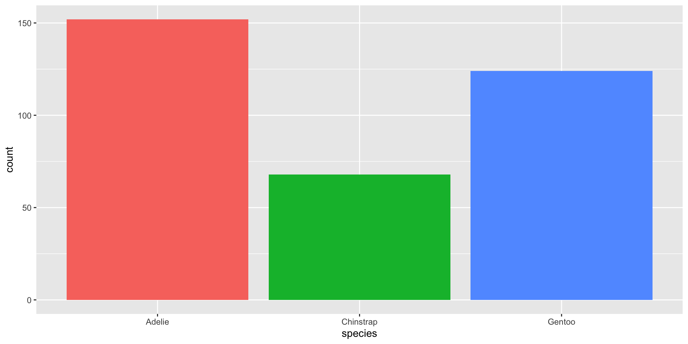

- Die Lernenden können Querverweise zu Diagrammen und Tabellen in Quarto Dokumenten erstellen.
- Die Lernenden können Folien im Format revealjs HTML erstellen.
- Die Lernenden können Metadaten eines Quarto Dokuments anpassen.
Erstellung von Berichten und Folien mit Quarto
rstatsZH - Data Science mit R
Lernziele (für diese Woche)
Quarto
Quarto …
- ist ein neues, open-source, wissenschaftliches und technisches Publikationssystem
- zielt darauf ab, den Prozess der Erstellung von Berichten und der Zusammenarbeit drastisch zu verbessern

Artikel & Berichte (HTML)
Artikel & Berichte (HTML)
Besuche quarto.org!
Folien (HTML revealjs)
Folien (HTML revealjs)
Besuche quarto.org!
Dashboards
Dashboards
Besuche quarto.org!
Gallery auf quarto.org
Anatomie eines Quarto-Dokuments
Komponenten
Metadaten: YAML
Text: Markdown
Code: Ausgeführt via
knitr(R) oderjupyter(python)
. . .
Füge alles zusammen und du erhältst anschauliche, schöne und nützliche Ergebnisse!
Literate programming
DE: wortgetreue Progammierung
Bei der wortgetreuen Programmierung wird die Programmlogik in einer menschlichen Sprache mit eingeschlossenen Codeschnipseln geschrieben.
---
title: "ggplot2 demo"
date: "19/11/2024"
format: html
---
## Pinguine
Es gibt einen linearen Zusammenhang zwischen Länge und Tiefe des Schnabels, abhängig von der Art.
```{r}
library(ggplot2)
library(palmerpenguins)
ggplot(penguins, aes(x = bill_length_mm,
y = bill_depth_mm,
color = species)) +
geom_point()
```Metadaten
YAML
“Yet Another Markup Language” oder “YAML Ain’t Markup Language” wird verwendet, um Metadaten auf Dokumentebene bereitzustellen.
---
key: value
---Output (Ausgabe) Optionen
---
format: etwas
---. . .
---
format: html
------
format: pdf
------
format: revealjs
---Output (Ausgabe) Optionen Argumente
Einrückung ist wichtig!
---
format:
html:
toc: true
code-fold: true
---YAML Validierung
- Ungültig: Kein Leerzeichen nach
:
---
format:html
---- Ungültig: Als fehlend gelesen
---
format:
html
---YAML Validierung
Es gibt mehrere Möglichkeiten, gültiges YAML zu formatieren:
- Gültig: Es gibt ein Leerzeichen nach
:
format: html- Gültig:
format: htmlmit Auswahlen, die mit korrekter Einrückung erfolgen
format:
html:
toc: trueQuarto linter
Lint oder ein Linter ist ein statisches Code-Analyse-Tool, das Programmierfehler, Bugs, stilistische Fehler und verdächtige Konstrukte aufzeigt.

Quarto YAML Intelligenz
RStudio + VSCode bieten eine umfangreiche Tab-Vervollständigung – fange mit einem Wort an und tippe auf die Tab-Taste, um es zu vervollständigen, oder Strg + Leertaste um alle möglichen Optionen zu sehen.

Liste der gültigen YAML-Felder
Viele YAML-Felder sind bei verschiedenen Ausgaben gleich
Aber auch jeder Ausgabetyp hat einen eigenen Satz an gültigen YAML-Feldern und Optionen
Komplette Liste: quarto.org/docs/reference/formats/html
Text
Text Formatierung
| Markdown Syntax | Ausgabe | |
|---|---|---|
|
italics and bold | |
|
superscript2 / subscript2 | |
|
||
|
verbatim code |
Headings (Überschriften)
| Markdown Syntax | Ausgabe | |
|---|---|---|
|
Header 1 |
|
|
Header 2 |
|
|
Header 3 |
|
|
Header 4 |
|
|
Header 5 |
|
|
Header 6 |
Links
Es gibt verschiedene Arten von “Links” oder Hyperlinks.
Markdown
Du kannst [benannte Hyperlinks] (https://quarto.org/),
direkte URLs wie <https://quarto.org/> und Links zu
[anderen Orten](#quarto-anatomy) in
das Dokument einbetten. Die Syntax für das Einbetten eines
Inline-Bildes ist ähnlich: .Ausgabe
Du kannst [benannte Hyperlinks] (https://quarto.org/), direkte URLs wie https://quarto.org/ und Links zu anderen Orten in das Dokument einbetten. Die Syntax für das Einbetten eines Inline-Bildes ist ähnlich:  .
.
Listen
Ungeordnete Liste:
Markdown:
- unordered list
- sub-item 1
- sub-item 1
- sub-sub-item 1 Ausgabe
- unordered list
- sub-item 1
- sub-item 1
- sub-sub-item 1
- sub-item 1
Geordnete Liste:
Markdown:
1. ordered list
2. item 2
i. sub-item 1
A. sub-sub-item 1Ausgabe
- ordered list
- item 2
- sub-item 1
- sub-sub-item 1
- sub-item 1
Zitate
Markdown:
> Let us change our traditional attitude to the construction of programs: Instead of imagining that our main task is to instruct a computer what to do, let us concentrate rather on explaining to human beings what we want a computer to do.
> - Donald Knuth, Literate Programming. . .
Output:
Let us change our traditional attitude to the construction of programs: Instead of imagining that our main task is to instruct a computer what to do, let us concentrate rather on explaining to human beings what we want a computer to do. - Donald Knuth, Literate Programming
@knuth1984literate
Fussnoten
Die Nummerierung und Formatierung von Fussnoten wird unterstützt.
Inline-Fussnoten
Hier ist eine Inline-Notiz.^[Inline-Notizen sind einfacher zu schreiben,
da man nicht erst einen Bezeichner auswählen und nach unten gehen muss, um
um die Notiz zu schreiben.]Hier ist eine Inline-Notiz.1
Verwende den visuellen Editor-Modus (Visual editor)
Für das Hinzufügen von Fussnoten wird der visuelle Editor-Modus empfohlen.
Ihr seid dran: 01-markdown-syntax.qmd
- Öffne posit.cloud in deinem Browser (verwende dein Lesezeichen).
- Öffne den rstatszh-k009 Arbeitsbereich (Workspace) für den Kurs.
- Klicke auf Start neben md-09-uebungen.
- Suche im Dateimanager im Fenster unten rechts die Datei
01-markdown-syntax.qmdund klicke darauf, um sie im Fenster oben links zu öffnen. - Verwende den Quelltexteditor (Source editor) Modus
- Folge den Anweisungen in der Datei.
20:00
Pause machen
Bitte steh auf und beweg dich. Lasst eure E-Mails in Frieden ruhen.

10:00
Code
Anatomie eines Code-Block
```{r}
#| label: penguins
#| message: false
library(tidyverse)
library(palmerpenguins)
library(knitr)
penguins |>
count(species) |>
kable()
```| species | n |
|---|---|
| Adelie | 152 |
| Chinstrap | 68 |
| Gentoo | 124 |
- Hat 3x Backticks an jedem Ende
- Engine (
r) wird zwischen geschweiften Klammern{r}angegeben - Optionen, die mit dem Zeichen
#|angegeben werden (Hashpipe)
Code, für wen ist es?
- Die Art und Weise, wie du Code anzeigst, ist in verschiedenen Kontexten sehr unterschiedlich.
- In einem Lehrszenario wie heute möchte ich wirklich Code anzeigen.
- In einem Unternehmen möchtest du vielleicht eine datenwissenschaftliche Ausgabe haben, die den Quellcode anzeigt, UND eine Ausgabe, die sich an die Nutzer:innen richtet und den Code verbirgt.
Ein- und Ausblenden von Code mit echo
- Die Option
echozeigt den Code an, wenn sie auftruegesetzt ist, und verbirgt ihn, wenn sie auffalsegesetzt ist.
Tabellen und Diagramme
- In reproduzierbaren Berichten und Manuskripten sind Tabellen und Figuren die am häufigsten enthaltenen Codeausgaben.
Tabellen
Markdown Tabellen
Markdown:
| Right | Left | Default | Center |
|------:|:-----|---------|:------:|
| 12 | 12 | 12 | 12 |
| 123 | 123 | 123 | 123 |
| 1 | 1 | 1 | 1 |
Verwende den visuellen Editor-Modus (Visual editor)
Für das Hinzufügen von Fussnoten wird der visuelle Editor-Modus empfohlen.
. . .
Ausgabe:
| Right | Left | Default | Center |
|---|---|---|---|
| 12 | 12 | 12 | 12 |
| 123 | 123 | 123 | 123 |
| 1 | 1 | 1 | 1 |
Tabellen mit Code
Das Paket knitr kann Datenrahmen in Tabellen umwandeln mit knitr::kable():
| species | island | n |
|---|---|---|
| Adelie | Biscoe | 44 |
| Adelie | Dream | 56 |
| Adelie | Torgersen | 52 |
| Chinstrap | Dream | 68 |
| Gentoo | Biscoe | 124 |
Tabellen mit Code
Wenn du umfangreichere Tabellen möchtest, probiere das gt-Paket und alles, was es bietet!
| species | island | bill_length_mm | bill_depth_mm | flipper_length_mm | body_mass_g | sex | year |
|---|---|---|---|---|---|---|---|
| Adelie | Torgersen | 39.1 | 18.7 | 181 | 3750 | male | 2007 |
| Adelie | Torgersen | 39.5 | 17.4 | 186 | 3800 | female | 2007 |
| Adelie | Torgersen | 40.3 | 18.0 | 195 | 3250 | female | 2007 |
| Adelie | Torgersen | NA | NA | NA | NA | NA | 2007 |
| Adelie | Torgersen | 36.7 | 19.3 | 193 | 3450 | female | 2007 |
| Adelie | Torgersen | 39.3 | 20.6 | 190 | 3650 | male | 2007 |
Abbildungen & Diagramme
Markdown Abbildungen

Unterabbildungen
Markdown:
::: {#fig-penguins layout-ncol=2}
{#fig-blue width="250px"}
{#fig-orange width="250px"}
Zwei Pinguine
:::Unterabbildungen
Ausgabe:


Suche nach den Abbildungen
An Orten wie Markdown, YAML oder beim Einlesen von Dateien musst du absolute oder relative Dateipfade verwenden:
. . .
- Absolut = Schlecht:
"/Users/lars/uebungen"- Auf wessen Computer wird das funktionieren?
. . .
Relativ = Besser:
"../= ein Verzeichnis nach oben,../../= zwei Verzeichnisse nach oben, etc./..oder/= beginnen im “root”-Verzeichnis deines aktuellen Computers
Abbildungen mit Code (Diagramme)
```{r}
#| fig-width: 4
#| fig-align: right
knitr::include_graphics("img/md-09/penguins-quarto-ball.png")
```
Pfade in R-Code referenzieren
Verwende das here-Paket, um auf das Projektverzeichnis zu verweisen, da here::here() immer im obersten Verzeichnis einer .Rproj beginnt:
[1] "/Users/lschoebitz/Documents/gitrepos/gh-org-rstatszh-k009/website"Abbildungen mit Code (Diagramme)
```{r}
ggplot(penguins, aes(x = species, fill = species)) +
geom_bar(show.legend = FALSE)
```
Querverweise (cross references)
Querverweise (cross references)
Unterstützen Leser:innen sich in deinem Dokument zurechtzufinden, indem du nummerierte Verweise und Hyperlinks zu Elementen wie Abbildungen und Tabellen einfügst.
Querverweise Schritte:
- Füge der Abbildung oder Tabelle eine Beschriftung hinzu:
#| tbl-cap:oder#| fig-cap:. - Füge der Abbildung oder Tabelle eine Bezeichungen hinzu:
#| label:beginnend mitfig-odertbl-. - Verweise im Text auf die Abbildung oder Tabelle mit
@fig-...oder@tbl-....
- Füge der Abbildung oder Tabelle eine Beschriftung hinzu:
Abbildung Querverweise
Das Vorhandensein der Beschriftung (Blauer Pinguin) und der Bezeichnung (#fig-blue-penguin) machen diese Abbildung referenzierbar:
Markdown:
Siehe @fig-blue-penguin für einen süssen blauen Pinguin.
{#fig-blue-penguin}Tabelle Querverweise
Das Vorhandensein der Überschrift (Ein paar Pinguine) und der Bezeichnung (#tbl-pinguine) machen diese Tabelle referenzierbar:
Markdown:
Siehe @tbl-penguins für Daten über einige Pinguine.
```{r}
#| label: tbl-pinguine
#| tbl-cap: Ein paar Pinguine
head(penguins) |>
gt()
```Ausgabe:
Siehe Table 1 für Daten über einige Pinguine.
| species | island | bill_length_mm | bill_depth_mm | flipper_length_mm | body_mass_g | sex | year |
|---|---|---|---|---|---|---|---|
| Adelie | Torgersen | 39.1 | 18.7 | 181 | 3750 | male | 2007 |
| Adelie | Torgersen | 39.5 | 17.4 | 186 | 3800 | female | 2007 |
| Adelie | Torgersen | 40.3 | 18.0 | 195 | 3250 | female | 2007 |
| Adelie | Torgersen | NA | NA | NA | NA | NA | 2007 |
| Adelie | Torgersen | 36.7 | 19.3 | 193 | 3450 | female | 2007 |
| Adelie | Torgersen | 39.3 | 20.6 | 190 | 3650 | male | 2007 |
Querverweise Schritte:
- Füge der Abbildung oder Tabelle eine Beschriftung hinzu:
#| tbl-cap:oder#| fig-cap:.
- Füge der Abbildung oder Tabelle eine Bezeichungen hinzu:
#| label:beginnend mitfig-odertbl-.
- Verweise im Text auf die Abbildung oder Tabelle mit:
@fig-...oder@tbl-....
Ihr seid dran: 02-querverweise.qmd
- Öffne posit.cloud in deinem Browser (verwende dein Lesezeichen).
- Öffne den rstatszh-k009 Arbeitsbereich (Workspace) für den Kurs.
- Klicke auf Continue neben md-09-uebungen.
- Suche im Dateimanager im Fenster unten rechts die Datei
02-querverweise.qmdund klicke darauf, um sie im Fenster oben links zu öffnen. - Verwende den Quelltexteditor (Source editor) Modus
- Folge den Anweisungen in der Datei.
20:00
Geht’s auch auf Deutsch?
Ja!
---
lang: de
---Pause machen
Bitte steh auf und beweg dich. Lasst eure E-Mails in Frieden ruhen.

10:00
Anatomie einer Quarto-Präsentation (Folien)
Komponenten
Metadaten: YAML
Text: Markdown
Code: Ausgeführt via
knitr(R) oderjupyter(python)
. . .
Füge alles zusammen und du erhältst anschauliche, schöne und nützliche Folien!
Wir sind dran: 03-folien.qmd
- Öffne posit.cloud in deinem Browser (verwende dein Lesezeichen).
- Öffne den rstatszh-k009 Arbeitsbereich (Workspace) für den Kurs.
- Klicke auf Continue neben md-09-uebungen.
- Suche im Dateimanager im Fenster unten rechts die Datei
03-folien.qmdund klicke darauf, um sie im Fenster oben links zu öffnen.
30:00
Ihr seid dran: 03-folien.qmd
Mach da weiter, wo wir aufgehört haben, und:
Ändere den Folien Übergang (transition style) zwischen den Folien (auf quarto.org: Suche nach “slide transitions” im Suchfeld oben rechts)
Füge Folien Nummern (slide numbers) zu deinen Folien (auf quarto.org: Suche nach “slide numbers” im Suchfeld oben rechts)
10:00
Quarto Präsentation Formate
Quarto Präsentation Formate
revealjsfür HTML-Folien- Im Wesentlichen der Ersatz für
xaringan, aber mit Pandoc-nativer Syntax
- Im Wesentlichen der Ersatz für
beamerfür LaTeX-FolienPowerPoint für den Fall, dass du über MS Office zusammenarbeiten musst
Besuche quarto.org
Zeitpuffer: Modul 9
Kann ich noch etwas zum heutigen Modul erklären?
05:00
Zusatzaufgaben Modul 9
Modul 9 Dokumentation
Zusatzaufgaben Abgabedatum
- Abgabedatum: Montag, 25. November
- Korrektur- und Feedbackphase bis zu: Donnerstag, 28. November
Danke
Danke! 🌻
Folien erstellt mit revealjs und Quarto: https://quarto.org/docs/presentations/revealjs/
Zugang zu Folien als PDF auf GitHub
Alle Materialien sind lizenziert unter Creative Commons Attribution Share Alike 4.0 International.
Footnotes
Inline-Notizen sind einfacher zu schreiben, da man nicht erst einen Bezeichner auswählen und nach unten gehen muss, um die Notiz zu schreiben.↩︎